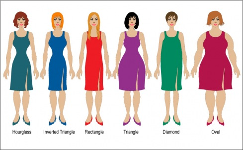

Orijentalni, tj. trbušni ples sigurno pozitvno utiče na telo i psihu. Žene koje su probale ovaj ples uvek kažu kako se odlično osećaju posle treninga, i da su posle nekoliko nedelja ili meseci osetile da su lepše, ženstvenije, samouverenije u svom svakodnevnom životu. Dakle, ples je vrlo efikasna psiho-fizička rekreacija.
Često se spominje i da se može smršati od trbušnog plesa, jer se za jedan čas potroši „300 kalorija“. Međutim, ta stvar sa mršavljenjem nije toliko jednostavna – inače bi sve trbušne plesačice bile građenje kao Didem ili kao Sejdi (zavisi šta ko voli, manekensku građu ili ženstvenu građu). Dakle, da li može da se smrša od trbušnog plesa?
Kalorije
Prvo treba rasčistiti da je taj broj kalorija koji se navodi vrlo uopšten jer se odnosi na ples generalno. Broj potrošenih kalorija zavisi od intenziteta plesa, dakle nećete iste kalorije potrošiti igrajući valcer i hip hop. Ako govorimo o trbušnom plesu, onda na primer: daleko više kalorija se potroši ako plešemo sa puno koraka, okreta, naglih promena pravca ili ako plešemo u brzom tempu, nego na primer ako vežbamo talasanje rukama ili telom – koje treba uvežbavati sporo. Takođe, nije svejedno koliko kila imamo, teža osoba će trošiti više kalorija jer joj je potrebno više energije da pomera veću masu. Takođe, početnik će trošiti više kalorija od naprednog plesača za izvođenje istog pokreta, jer što smo više uvežbani to nam je potreban manji napor da izvedemo pokret. To je posebno tačno upravo za orijentalni ples gde se trudimo da mišići koji tog trenutka ne rade – budu opušteni.
Ako se podsetimo šta zapravo znače te „kalorije“ sve ovo će postati vrlo razumljivo. Dakle, kalorije su jedinica mere energije. U našem slučaju broj kalorija odgovara na pitanje: Koliko energije naše telo koristi za fizičke i mentalne aktivnosti i za održavanje vitalnih funkcija? A tu je i ono drugo neizbežno pitanje: „Koliko energije unosimo u naš organizam?“, tj. koliko ima kalorija ono što smo pojeli.
Šta znači „smršati“?
Ljudi obično kažu da hoće da „skinu kilažu“. Problem s time je taj da „kilaža“ tj. koliko kilograma je teško naše telo, obuhvata sve što telo sadrži: kosti, unutrašnje organe, mišiće itd. Masno tkivo je samo jedan deo toga i verovatno ne previše velik. Zapravo, pošto ljudski organizam sadrži veliki procenat vode, najlakši način da „izgubite kilažu“ jeste da popijete diuretik – ali od toga nećete stvarno (i trajno) smršati. Zato ni većina „tableta za mršavljenje“ ne funkcioniše, jer njima samo izbacujete vodu.
Osim toga, mišićno tkivo je teže nego masno tkivo, zato dve osobe mogu da imaju istu težinu i visinu, a da jedna bude fit, a druga debela. Ustvari čak i mršava osoba može da bude „debela“ u smislu da ima prevelik procenat masnog tkiva u odnosu na svoju težinu.
Pretpostavljam da, kada kažete „smršati“, efekat koji zapravo želite da postignete jeste da skinete „salo“, tj. da smanjite naslage masnog tkiva pod kožom. Da vidimo onda kako i zašto nastaju te naslage…
Masno tkivo tj. „salo“
Potkožno masno tkivo služi kao skladište kalorija, tj. energije koja se na taj način čuva za „nedaj bože“. Naši preci su hiljadama godina daleko više strahovali od gladi nego od gojaznosti. Ljudska vrsta je verovatno najduže vremena provela hraneći se onim što sakupi i ulovi. To znači da kad im se posreći imali su hrane u izobilju, ali su uvek nastupali i gladni dani. Zato smo i razvili tu sposobnost da višak energije skladištimo u telu, da bi mogli da upotrebimo kada zatreba. Žene lakše skladište i teže gube masno tkivo jer su im potrebne dodatne kalorije tokom trudnoće i dojenja.
Dakle, masne naslage nastaju kada u vidu hrane unesemo višak energije (izražene u kalorijama) i taj višak se uskladišti u telu da bi se koristio nekad kada imamo manjak hrane.
Na osnovu ovoga može vam se učiniti da bi efikasan način mršavljenja bilo gladovanje, ali to nije tako. Naš organizam je razvio još jednu odliku da bi mogao da preživi periode gladi, a to je da kada se smanji unos kalorija, usporava se i bazni metabolizam.
Bazni metabolizam
Bazni metabolizam je količina energije (izražena npr. u kalorijama) potrebna za održavanje vitalnih funkcija, dakle za rad srca, disanje i slično. Drugim rečima to je količina kalorija koju potrošite dok samo ležite i ne radite ništa. Dakle, na telešopu ne lažu kada kažu „trošićete kalorije dok sedite i gledate TV“ – jedino izostave detalj da vam za to uopšte ne treba ona njihova naprava.
Naravno, još niko nije smršao sedeći i gledajući TV, čak i da gladuje. Jedan od razloga jeste upravo to da se metabolizam usporava kad gladujete (u prevodu: kad ste na drastično nisko-kaloričnoj dijeti). Što je bazni metabolizam sporiji, troši se manje kalorija.
Ishrana za mršavljenje
Ipak da bi ste smršali morate unositi manje kalorija nego što potrošite – tj. da stvorite kalorijski deficit. Što se tiče ishrane najefikasniji način za to je da jedete nešto malo manje nego što potrošite i svake nedelje se častite za uspeh – i to nekom poslasticom.
Evo zašto:
Bazni metabolizam ne samo da se smanjuje kada se drastično smanji unos kalorija, već i ako umereno, ali trajno smanjite unos kalorija. Dakle, posle oko nedelju dana dijete bazni metabolizam će se smanjiti i vi bi ste morali ponovo da smanjite unos kalorija, na šta bi se bazni metabolizam ponovo usporio i tako u krug. Dakle, efikasnije je varirati količinu hrane koju pojedemo, na primer tako što se jednom nedeljno častite – to je dovoljno da umiri vaš organizam da neće nastupiti period gladi, pa ne mora da uspori metabolizam i tako „štedi“ energiju. Da ne govorim o tome da ćete se vi osećati lepše kad vam omiljeno jelo nije „zabranjeno“ i kad za trud u toku cele nedelje dobijete malu „nagradu“.
Nije svejedno ni šta jedete. Teoretski 100 kalorija je sto kalorija – bilo da je iz čipsa ili iz brokolija. Međutim, u praksi to nije tako. Našem organizmu su potrebne hranljive materije (vitamini, minerali, ugljeni hidrati, proteini, masti) i to u određenim prosečnim količinama svaki dan. Ako duže vremena unosimo od nečega premalo (ili previše) nastaju zdravstveni problemi. Dakle, ako radi mršavljenja smanjimo unos kalorija – drugim rečima manje jedemo – onda moramo da obezbedimo, da te kalorije ne budu „prazne“, da u onom što jedemo bude sve hranljivo što treba našem organizmu. Ustvari, to bi trebalo da bude tako i kada ne držimo dijetu. Ima puno teorija o tome šta je tačno zdrava hrana, kao i kolika treba da bude „dnevna doza“ ovog ili onog vitamina. Međutim, ako jedete puno povrća i po malo od svega ostalog sigurno nećete pogrešiti. Doduše, iz „svega ostalog“ bi trebalo izbaciti spomenuti čips i ostali džank, jer u njima najmanje ima hrane.
Fizička aktivnost i „topljenje sala“
Ako hoćete da mršavite, a ostanete zdravi, ili možda upravo hoćete da smršate iz zdravstvenih razloga – fizička aktivnost je „obavezna“. Ako povećate fizičku aktivnost, i time broj kalorija koji trošite, biće vam mnogo lakše da regulišete ishranu. Možda uopšte nećete morati da jedete manje nego ranije. Potrebne su vam dve vrste aktivnosti: za trošenje „sala“ i za jačanje mišića. Jači mišići znače brži bazni metabolizam – tj. mišićima treba više energije i u toku odmora nego na primer masnom tkivu. Time će vam biti još lakše da stvorite „kalorijski deficit“.
Aktivnost koja troši kalorije iz masnih naslaga mora da bude konstantna aktivnost, umerenog tempa i da traje duže od 30 minuta (recimo sat, sat i po). Tek posle pola sata aktivnosti organizam počinje da troši kalorije iz masnog tkiva, do tada se troše ugljeni hidrati. Ako nikako nemamo vremena za vežbanje duže od 30 minuta, onda naša aktivnost mora da bude visokog intenziteta (na primer intervalni trening). U ovom slučaju, za vreme aktivnosti telo će doduše sagorevati ugljene hidrate, ali će metabolizam ostati ubrzan duže vreme nakon treninga. U tom periodu odmora telo će sagorevati masti. Drugim rečima, za mršavljenje ne samo da nije svejedno kakve kalorije ste uneli, već ni kakve kalorije ste potrošili.
Sagorevanje masti stvara i neke nusprodukte u tkivima, na primer kiselinu od koje imamo osećaj „upale mišića“. Zato je bitno nakon vežbanja piti dovoljno vode da bi „isprali“ te materije iz organizma.
„Salce“ i genetika
Postoji još jedan faktor koji utiče na mršavljenje, a na koji nažalost mi ne možemo baš mnogo da utičemo – a to je genetika. Naravno, genetika (kod zdravih osoba) ne utiče na takav način da ne možete da skinete 20 kila. Ali, itekako utiče na raspored masnog tkiva na telu. Da li smo „prsate“, „guzate“ ili „ravne“, da li imamo „jahaće pantalone“, „pojas za spasavanje“ ili „krofnice“, da li bi nas modni stilisti svrstali pod „kruške“, „jabuke“, „banane“ ili neko drugo voće – to zavisi od genetike. Masne naslage svi mogu da stanje, ali nažalost ne možemo baš mnogo da utičemo na to gde ćemo se najlakše stesati, a gde će ostati uporno „jastuče“. Zato za sve fitnes aktivnosti, pa tako i za ples, važi mudrost da u nekom momentu morate da prihvatite sebe onakvom kakva jeste. To ne zanči odustati od lepog izgleda, pa ni od vitke linije, već prestati ganjati ideal i prihvatiti „svoje najbolje izdanje“.
Dakle, da li može da se smrša od trbušnog plesa? Može, ako trenirate dovoljno i hranite se zdravo. Takođe, možda će biti neophodno da ples upotpunite nekim drugim aktivnostima, na primer kondicionim vežbama. Ples može biti pomoć u postizanju vitke linije, ali ono što će vam ples svakako pružiti jeste da se osećate odlično u svojoj koži – a to, priznaćete, nije za bacanje.